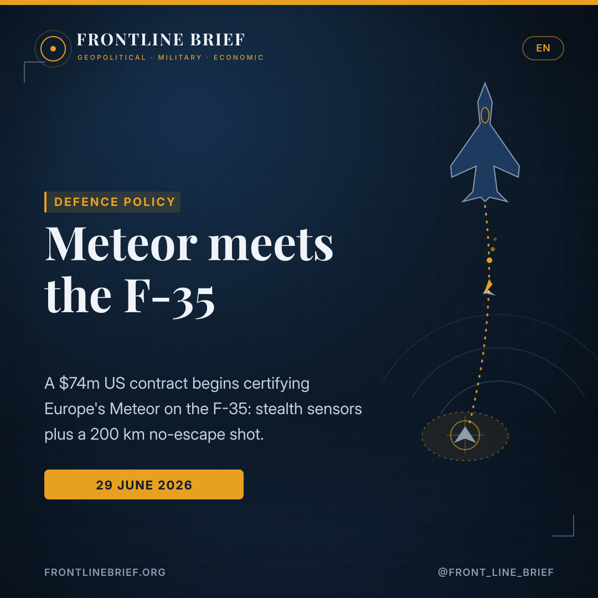
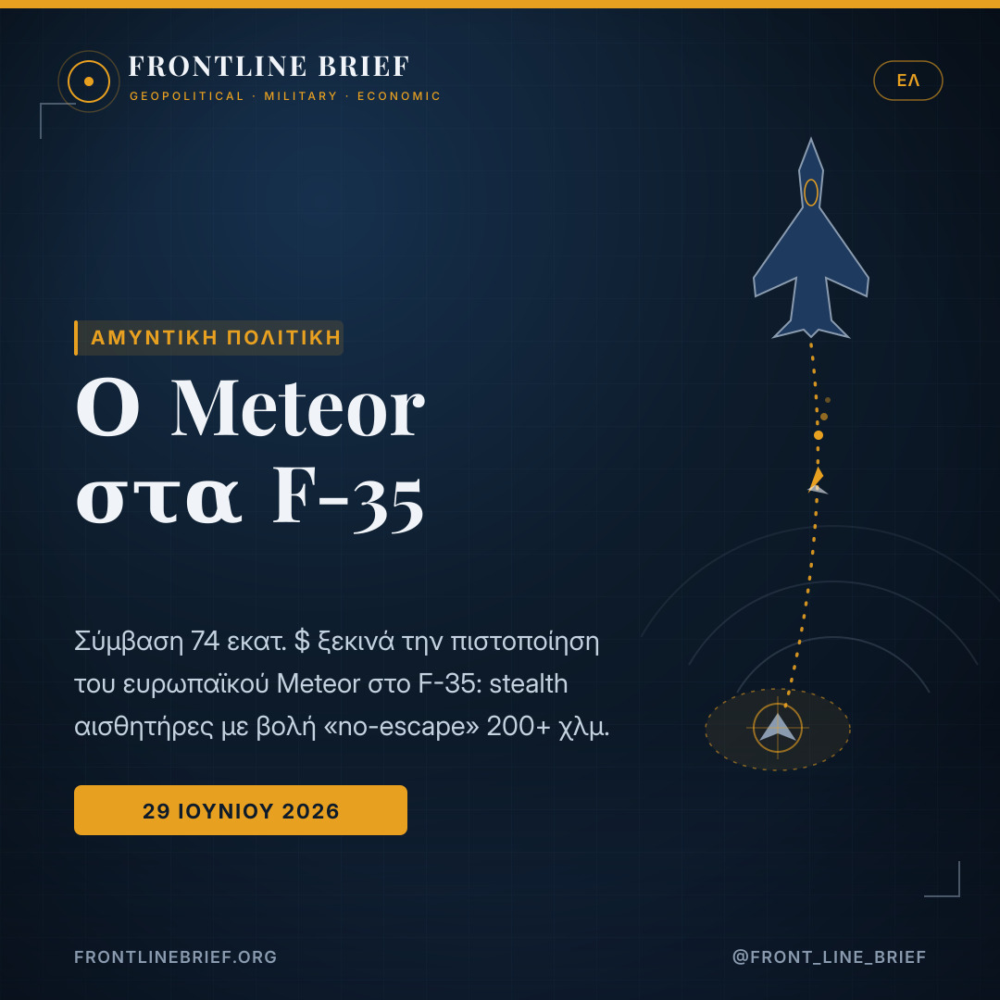
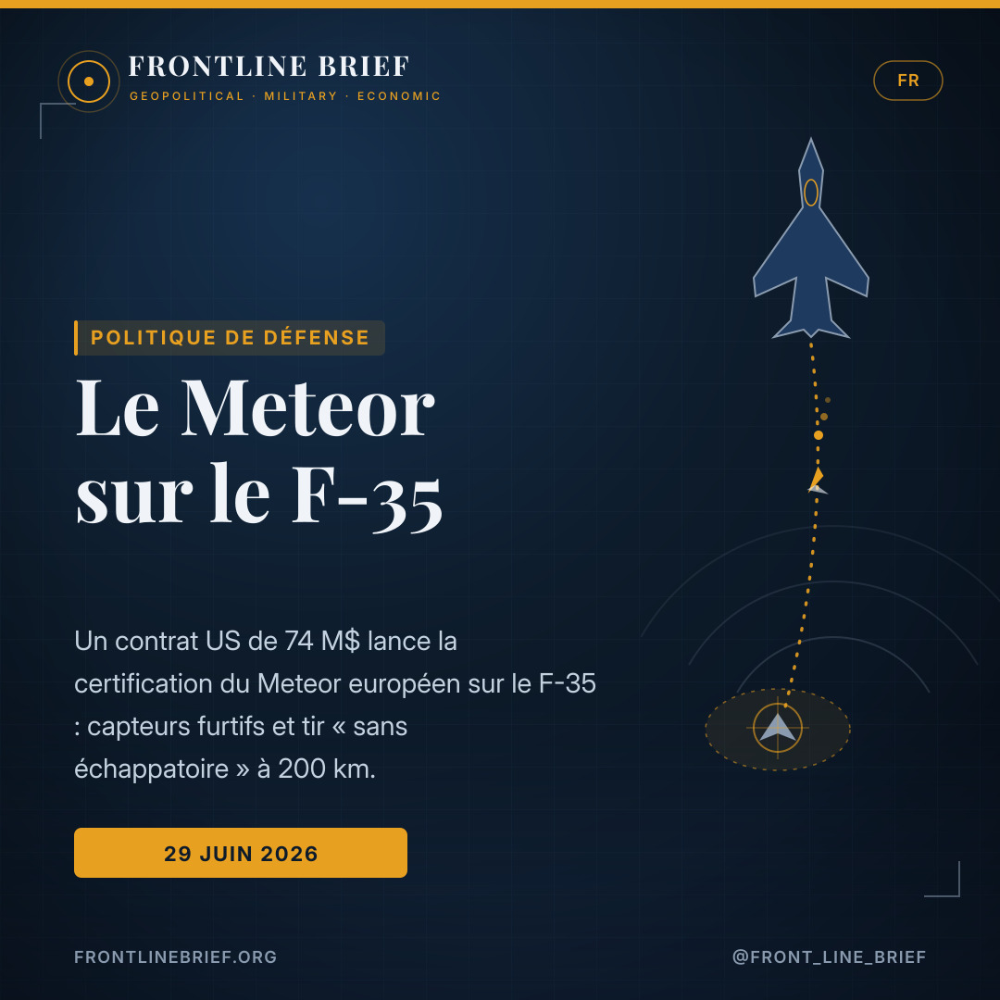
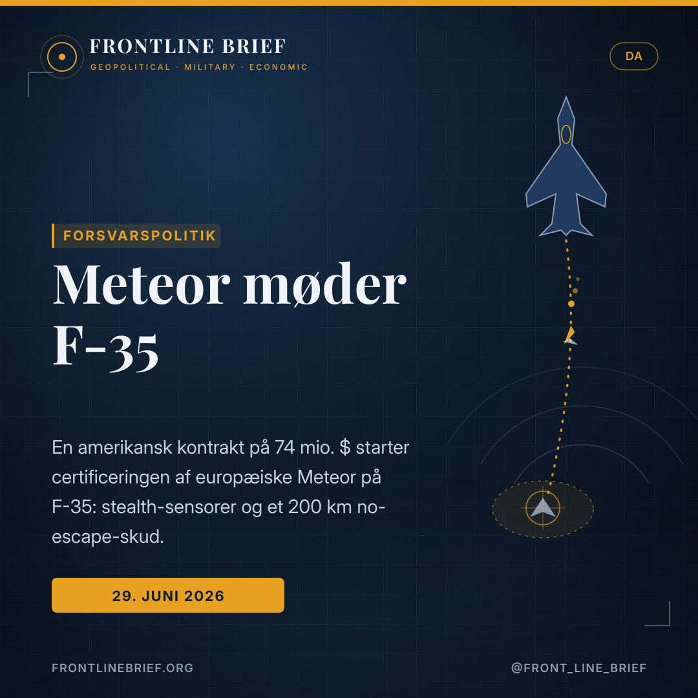
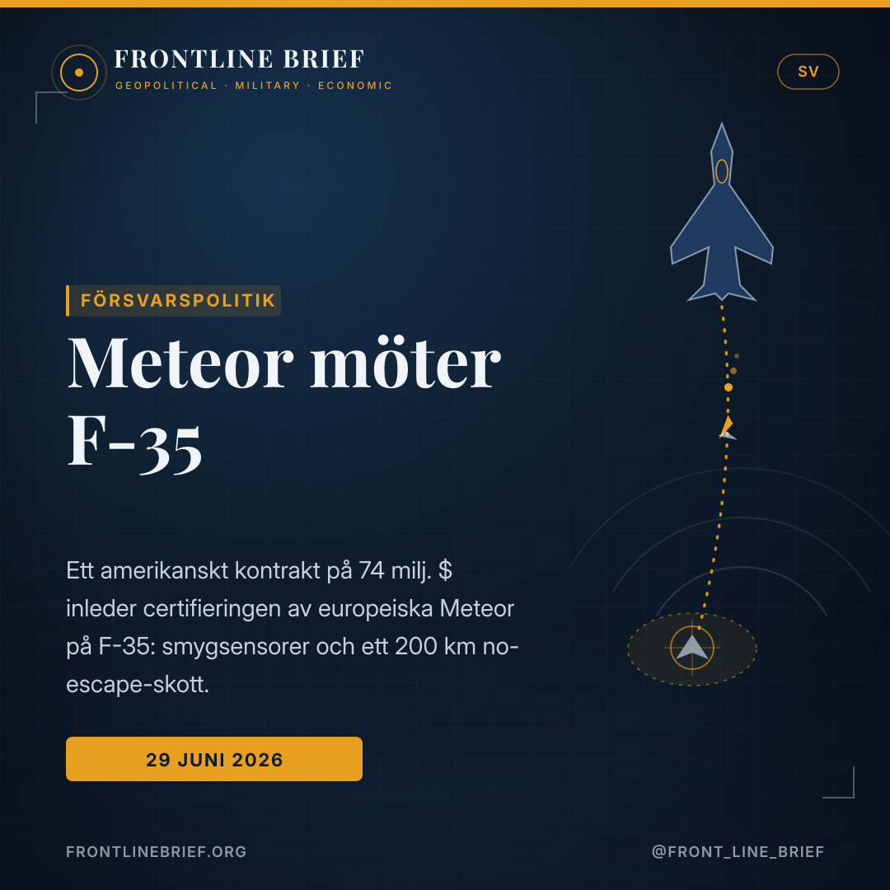

Meteor meets the F-35: a $74m step toward the West's most lethal air-to-air pairing
A new US contract to put British and Italian weapons on the F-35 is being read across Europe as the first real move to certify MBDA's Meteor on the stealth fighter. If it works, it marries the jet's unmatched sensors to a missile that keeps thrust almost to impact — and for Greece, which already fields Meteor on its Rafales, the prize is a common long-range weapon across its two best platforms.





The first real step
A US Defense Department contract to Lockheed Martin covers integrating British and Italian "unique weapon systems" on the F-35A and F-35B. It does not name Meteor, but with both nations making it their top requirement, analysts read it as the start of certification — with development, test and certification work running to the end of 2032.
A ramjet that never quits
MBDA's Meteor is a ramjet-powered air-to-air missile with an estimated range beyond 200 km. Unlike solid-rocket missiles that bleed energy in flight, it keeps producing thrust almost to impact, giving a "No Escape Zone" many times larger than its rivals. It already arms Rafale, Gripen and Eurofighter.
A weapon on both jets
The Hellenic Air Force already fields Meteor via its Rafales and wants it certified on its F-35s too. It has also asked Washington to release the latest AIM-120D AMRAAM — so its F-35 could carry the best European or the best American beyond-visual-range weapon, mission by mission.
The contract that unlocks it
One of the longest-standing gaps in the F-35's armoury is starting to close. A new contract from the US Defense Department to Lockheed Martin, worth about $74 million, covers the integration of British and Italian "unique weapon systems" onto the F-35A and F-35B. The text does not name the missile — but since both London and Rome have made integrating the Meteor their single highest priority, analysts read the award almost unanimously as the first substantive step toward certifying the European missile on the stealth jet. The work, spanning development, testing and certification, runs through the end of 2032.
Why Meteor is special
Built by MBDA, Meteor was designed to dominate beyond-visual-range combat, and it already arms the Rafale, Gripen and Eurofighter. What sets it apart is its propulsion: a variable-thrust ramjet. Most air-to-air missiles use a solid-fuel rocket motor and coast — bleeding energy — through the long middle of their flight. Meteor instead keeps producing thrust almost to the terminal phase, so even at very long range it arrives fast and full of kinetic energy. The practical result is a "No Escape Zone" — the band inside which a target cannot outrun the missile even with violent manoeuvring — several times larger than that of comparable weapons.
Pair the F-35's sensors with a missile that still has thrust at impact, and the 'no-escape zone' stops being a metaphor.
Why the F-35 changes the equation
The jet brings the other half of the equation. Its APG-81 AESA radar, distributed-aperture system, electro-optical targeting and sensor fusion build a tactical picture no earlier generation could match. Until now, though, the aircraft could not actually fire a Meteor. Certification unites the F-35's ability to find and track a target without being seen with the reach and lethality of Europe's top air-to-air missile — in effect, bolting two of the most powerful systems in Western air combat together.
Britain and Italy in the driving seat
The push is European. The United Kingdom is the prime mover: the RAF has invested heavily in Meteor through the Typhoon and regards it as essential that the same weapon arm its F-35Bs. Italy, which flies both Eurofighter and F-35, wants the same commonality of armament. That is why the new contract is confined specifically to British and Italian weapons — the two nations most determined to see Meteor cleared for the jet.
What it means for Greece and the Aegean
For Athens the development lands close to home. The Hellenic Air Force already operates Meteor on its Rafales, and its air staff has asked that the same missile be certified on the Greek F-35s, to give one long-range weapon across both top platforms — with common training, support and mission planning, and lower overall costs. In parallel, Greece has requested the release of the most advanced AIM-120D AMRAAM, so its F-35 could draw on either the leading European or the leading American option. None of this is settled: the contract starts a multi-year process, not a finished capability. But a stealth aircraft that can detect without revealing itself, share tracks across a network and launch a no-escape shot at long range would meaningfully strengthen Greek deterrence over the Aegean — which is precisely why the file now sits under the close attention of the air staff.
Η σύμβαση που το ξεκλειδώνει
Ένα από τα πιο μακροχρόνια κενά στο οπλοστάσιο του F-35 αρχίζει να κλείνει. Νέα σύμβαση του αμερικανικού Υπουργείου Άμυνας προς τη Lockheed Martin, ύψους περίπου 74 εκατ. δολαρίων, αφορά την ενσωμάτωση βρετανικών και ιταλικών «μοναδικών οπλικών συστημάτων» στα F-35A και F-35B. Το κείμενο δεν κατονομάζει τον πύραυλο — όμως, καθώς Λονδίνο και Ρώμη έχουν θέσει ως κορυφαία προτεραιότητά τους την ενσωμάτωση του Meteor, οι αναλυτές διαβάζουν σχεδόν ομόφωνα την ανάθεση ως το πρώτο ουσιαστικό βήμα προς την πιστοποίηση του ευρωπαϊκού πυραύλου στο stealth μαχητικό. Οι εργασίες — ανάπτυξη, δοκιμές και πιστοποίηση — εκτείνονται έως το τέλος του 2032.
Γιατί ο Meteor είναι ξεχωριστός
Κατασκευασμένος από την MBDA, ο Meteor σχεδιάστηκε για να κυριαρχεί στις εμπλοκές πέραν του οπτικού ορίζοντα, και ήδη εξοπλίζει Rafale, Gripen και Eurofighter. Αυτό που τον ξεχωρίζει είναι η πρόωσή του: ένας ramjet μεταβλητής ώσης. Οι περισσότεροι πύραυλοι αέρος-αέρος χρησιμοποιούν πυραυλοκινητήρα στερεού καυσίμου και «αδρανοπορούν», χάνοντας ενέργεια, στο μεγάλο μεσαίο τμήμα της πτήσης. Ο Meteor αντίθετα συνεχίζει να παράγει ώση σχεδόν μέχρι την τελική φάση, ώστε ακόμη και σε πολύ μεγάλες αποστάσεις φτάνει γρήγορος και γεμάτος κινητική ενέργεια. Το πρακτικό αποτέλεσμα είναι μια «No Escape Zone» — η ζώνη μέσα στην οποία ο στόχος δεν μπορεί να ξεφύγει ακόμη και με ακραίους ελιγμούς — πολλαπλάσια από εκείνη αντίστοιχων όπλων.
Συνδύασε τους αισθητήρες του F-35 με έναν πύραυλο που έχει ακόμη ώση τη στιγμή της προσβολής, και η «ζώνη μη διαφυγής» παύει να είναι μεταφορά.
Γιατί το F-35 αλλάζει την εξίσωση
Το μαχητικό φέρνει το άλλο μισό της εξίσωσης. Το ραντάρ AESA APG-81, το σύστημα κατανεμημένης απεικόνισης (DAS), το ηλεκτρο-οπτικό σύστημα στόχευσης (EOTS) και η σύντηξη αισθητήρων χτίζουν μια τακτική εικόνα που καμία προηγούμενη γενιά δεν μπορούσε να προσφέρει. Ωστόσο, μέχρι σήμερα, το αεροσκάφος δεν μπορούσε στην πράξη να εκτοξεύσει Meteor. Η πιστοποίηση ενώνει την ικανότητα του F-35 να εντοπίζει και να παρακολουθεί στόχο χωρίς να αποκαλύπτεται με την εμβέλεια και τη θανατηφόρα ισχύ του κορυφαίου ευρωπαϊκού πυραύλου αέρος-αέρος — ουσιαστικά συνδέει δύο από τα ισχυρότερα συστήματα του δυτικού αεροπορικού πολέμου.
Βρετανία και Ιταλία στο τιμόνι
Η ώθηση είναι ευρωπαϊκή. Το Ηνωμένο Βασίλειο είναι ο βασικός κινητήριος μοχλός: η RAF έχει επενδύσει σημαντικά στον Meteor μέσω του Typhoon και θεωρεί απαραίτητο το ίδιο όπλο να εξοπλίζει και τα F-35B της. Η Ιταλία, που επιχειρεί τόσο με Eurofighter όσο και με F-35, επιδιώκει την ίδια κοινή φιλοσοφία οπλισμού. Γι' αυτό και η νέα σύμβαση περιορίζεται ειδικά σε βρετανικά και ιταλικά όπλα — τα δύο έθνη που πιέζουν περισσότερο για να πιστοποιηθεί ο Meteor στο μαχητικό.
Τι σημαίνει για την Ελλάδα και το Αιγαίο
Για την Αθήνα η εξέλιξη πέφτει κοντά στο σπίτι. Η Πολεμική Αεροπορία διαθέτει ήδη Meteor στα Rafale, και το Αεροπορικό Επιτελείο έχει ζητήσει ο ίδιος πύραυλος να πιστοποιηθεί και στα ελληνικά F-35, ώστε να υπάρχει ένα κοινό όπλο μεγάλης εμβέλειας και στις δύο κορυφαίες πλατφόρμες — με κοινή εκπαίδευση, υποστήριξη και σχεδιασμό αποστολών, και μικρότερο συνολικό κόστος. Παράλληλα, η Ελλάδα έχει ζητήσει την αποδέσμευση της πλέον προηγμένης έκδοσης AIM-120D AMRAAM, ώστε το F-35 της να μπορεί να αξιοποιεί είτε την κορυφαία ευρωπαϊκή είτε την κορυφαία αμερικανική επιλογή. Τίποτε από αυτά δεν είναι τετελεσμένο: η σύμβαση ξεκινά μια πολυετή διαδικασία, όχι μια ολοκληρωμένη δυνατότητα. Όμως ένα stealth αεροσκάφος που εντοπίζει χωρίς να αποκαλύπτεται, μοιράζεται στοιχεία μέσω δικτύου και εκτοξεύει βολή «χωρίς διαφυγή» σε μεγάλη απόσταση θα ενίσχυε ουσιαστικά την ελληνική αποτροπή πάνω από το Αιγαίο — γι' αυτόν ακριβώς τον λόγο ο φάκελος βρίσκεται τώρα υπό τη στενή παρακολούθηση του Αεροπορικού Επιτελείου.
Le contrat qui débloque tout
L'une des plus anciennes lacunes de l'arsenal du F-35 commence à se combler. Un nouveau contrat du département de la Défense américain à Lockheed Martin, d'environ 74 millions de dollars, porte sur l'intégration de « systèmes d'armes uniques » britanniques et italiens sur les F-35A et F-35B. Le texte ne nomme pas le missile — mais Londres et Rome ayant fait de l'intégration du Meteor leur toute première priorité, les analystes lisent presque unanimement cette attribution comme le premier pas concret vers la certification du missile européen sur l'appareil furtif. Les travaux — développement, essais et certification — courent jusqu'à fin 2032.
Pourquoi le Meteor est à part
Conçu par MBDA, le Meteor a été pensé pour dominer le combat au-delà de la portée visuelle, et il arme déjà le Rafale, le Gripen et l'Eurofighter. Ce qui le distingue, c'est sa propulsion : un statoréacteur à poussée variable. La plupart des missiles air-air utilisent un moteur-fusée à propergol solide et planent — en perdant de l'énergie — sur la longue phase médiane. Le Meteor, lui, continue de produire de la poussée presque jusqu'à la phase terminale : même à très longue distance, il arrive vite et plein d'énergie cinétique. Résultat concret : une « No Escape Zone » — la zone dans laquelle la cible ne peut échapper au missile même par des manœuvres extrêmes — plusieurs fois plus vaste que celle d'armes comparables.
Associez les capteurs du F-35 à un missile qui a encore de la poussée à l'impact, et la « zone sans échappatoire » cesse d'être une métaphore.
Pourquoi le F-35 change l'équation
L'appareil apporte l'autre moitié de l'équation. Son radar AESA APG-81, son système à ouverture distribuée, son optronique de ciblage et sa fusion de capteurs construisent une image tactique inégalée par les générations précédentes. Mais jusqu'ici, l'avion ne pouvait pas tirer de Meteor. La certification unit la capacité du F-35 à détecter et suivre une cible sans être vu à la portée et la létalité du meilleur missile air-air européen — en somme, elle accouple deux des systèmes les plus puissants du combat aérien occidental.
Le Royaume-Uni et l'Italie aux commandes
L'impulsion est européenne. Le Royaume-Uni est le moteur principal : la RAF a beaucoup investi dans le Meteor via le Typhoon et juge essentiel que la même arme équipe ses F-35B. L'Italie, qui aligne Eurofighter et F-35, vise la même communalité d'armement. C'est pourquoi le nouveau contrat se limite précisément aux armes britanniques et italiennes — les deux nations les plus déterminées à voir le Meteor homologué sur l'appareil.
Ce que cela signifie pour la Grèce et la mer Égée
Pour Athènes, l'évolution touche de près. L'armée de l'air hellénique met déjà en œuvre le Meteor sur ses Rafale, et son état-major a demandé que le même missile soit certifié sur les F-35 grecs, afin de disposer d'une arme de longue portée commune aux deux plateformes — avec entraînement, soutien et planification de mission communs, et des coûts globaux moindres. En parallèle, la Grèce a demandé la libération de la version la plus avancée de l'AIM-120D AMRAAM, pour que son F-35 puisse recourir à la meilleure option européenne ou américaine. Rien n'est acquis : le contrat lance un processus pluriannuel, non une capacité achevée. Mais un avion furtif capable de détecter sans se dévoiler, de partager des pistes en réseau et de tirer à longue distance un coup « sans échappatoire » renforcerait nettement la dissuasion grecque au-dessus de la mer Égée — d'où l'attention soutenue que l'état-major porte désormais à ce dossier.
Kontrakten, der låser det op
Et af de mest langvarige huller i F-35'ens våbenarsenal er ved at lukke. En ny kontrakt fra det amerikanske forsvarsministerium til Lockheed Martin på omkring 74 millioner dollars dækker integration af britiske og italienske «unikke våbensystemer» på F-35A og F-35B. Teksten nævner ikke missilet — men da både London og Rom har gjort integration af Meteor til deres højeste prioritet, læser analytikere næsten enstemmigt tildelingen som det første reelle skridt mod certificering af det europæiske missil på det snigfly. Arbejdet — udvikling, test og certificering — løber til udgangen af 2032.
Hvorfor Meteor er noget særligt
Bygget af MBDA blev Meteor designet til at dominere kamp uden for synsvidde, og det bevæbner allerede Rafale, Gripen og Eurofighter. Det, der adskiller det, er fremdriften: en ramjet med variabel ydelse. De fleste luft-til-luft-missiler bruger en raketmotor med fast brændstof og glider — mens de mister energi — gennem den lange mellemfase. Meteor bliver derimod ved med at producere fremdrift næsten til terminalfasen, så det selv på meget lang afstand ankommer hurtigt og fuldt af kinetisk energi. Det praktiske resultat er en «No Escape Zone» — det bånd, hvor målet ikke kan undslippe missilet selv med voldsomme manøvrer — flere gange større end hos sammenlignelige våben.
Par F-35'ens sensorer med et missil, der stadig har fremdrift ved nedslag, og «no-escape-zonen» holder op med at være en metafor.
Hvorfor F-35 ændrer ligningen
Flyet leverer den anden halvdel af ligningen. Dets APG-81 AESA-radar, distributed-aperture-system, elektro-optiske målsøgning og sensorfusion bygger et taktisk billede, ingen tidligere generation kunne matche. Men hidtil kunne flyet ikke faktisk affyre et Meteor. Certificeringen forener F-35'ens evne til at finde og spore et mål uden at blive set med rækkevidden og dødeligheden hos Europas bedste luft-til-luft-missil — i praksis kobler den to af de mest magtfulde systemer i vestlig luftkamp sammen.
Storbritannien og Italien ved roret
Skubbet er europæisk. Storbritannien er den primære drivkraft: RAF har investeret tungt i Meteor via Typhoon og anser det for afgørende, at samme våben bevæbner dets F-35B. Italien, der flyver både Eurofighter og F-35, ønsker samme våbenfællesskab. Derfor er den nye kontrakt netop begrænset til britiske og italienske våben — de to nationer, der mest beslutsomt vil have Meteor godkendt til flyet.
Hvad det betyder for Grækenland og Det Ægæiske Hav
For Athen rammer udviklingen tæt på. Det græske flyvevåben anvender allerede Meteor på sine Rafale, og dets luftstab har bedt om, at samme missil certificeres på de græske F-35, så der er ét langtrækkende våben på begge topplatforme — med fælles træning, støtte og missionsplanlægning og lavere samlede omkostninger. Sideløbende har Grækenland anmodet om frigivelse af den mest avancerede AIM-120D AMRAAM, så dets F-35 kan trække på enten den førende europæiske eller amerikanske mulighed. Intet af dette er afgjort: kontrakten starter en flerårig proces, ikke en færdig kapacitet. Men et snigfly, der kan opdage uden at afsløre sig, dele spor over et netværk og affyre et «no-escape»-skud på lang afstand, ville markant styrke græsk afskrækkelse over Det Ægæiske Hav — netop derfor ligger sagen nu under luftstabens tætte opmærksomhed.
Kontraktet som låser upp det
En av de mest långvariga luckorna i F-35:ans vapenarsenal börjar slutas. Ett nytt kontrakt från det amerikanska försvarsdepartementet till Lockheed Martin på omkring 74 miljoner dollar omfattar integration av brittiska och italienska «unika vapensystem» på F-35A och F-35B. Texten nämner inte roboten — men då både London och Rom gjort integrationen av Meteor till sin högsta prioritet läser analytiker nästan enhälligt tilldelningen som det första reella steget mot certifiering av den europeiska roboten på smygplanet. Arbetet — utveckling, test och certifiering — löper till slutet av 2032.
Varför Meteor är speciell
Byggd av MBDA konstruerades Meteor för att dominera strid bortom synhåll, och den beväpnar redan Rafale, Gripen och Eurofighter. Det som skiljer den åt är framdrivningen: en ramjet med variabel dragkraft. De flesta jaktrobotar använder en raketmotor med fast bränsle och glider — medan de tappar energi — genom den långa mellanfasen. Meteor fortsätter i stället att producera dragkraft nästan till slutfasen, så att den även på mycket långt avstånd anländer snabbt och full av rörelseenergi. Det praktiska resultatet är en «No Escape Zone» — det band inom vilket målet inte kan undkomma roboten ens med våldsamma manövrar — flera gånger större än hos jämförbara vapen.
Para ihop F-35:ans sensorer med en robot som fortfarande har dragkraft vid träff, och «no escape-zonen» upphör att vara en metafor.
Varför F-35 ändrar ekvationen
Planet bidrar med den andra halvan av ekvationen. Dess APG-81 AESA-radar, distributed-aperture-system, elektrooptiska målsökning och sensorfusion bygger en taktisk bild som ingen tidigare generation kunde matcha. Men hittills kunde planet inte faktiskt avfyra en Meteor. Certifieringen förenar F-35:ans förmåga att hitta och följa ett mål utan att synas med räckvidden och dödligheten hos Europas främsta jaktrobot — i praktiken kopplar den ihop två av de mäktigaste systemen i västlig luftstrid.
Storbritannien och Italien vid rodret
Drivkraften är europeisk. Storbritannien är den främsta motorn: RAF har investerat tungt i Meteor via Typhoon och anser det avgörande att samma vapen beväpnar dess F-35B. Italien, som flyger både Eurofighter och F-35, vill ha samma vapengemenskap. Därför är det nya kontraktet just begränsat till brittiska och italienska vapen — de två nationer som mest beslutsamt vill se Meteor godkänd för planet.
Vad det betyder för Grekland och Egeiska havet
För Aten landar utvecklingen nära hemmet. Det grekiska flygvapnet använder redan Meteor på sina Rafale, och dess flygstab har begärt att samma robot certifieras på de grekiska F-35, så att det finns ett gemensamt långräckviddigt vapen på båda topplattformarna — med gemensam träning, stöd och uppdragsplanering och lägre totalkostnader. Parallellt har Grekland begärt frisläppande av den mest avancerade AIM-120D AMRAAM, så att dess F-35 kan dra nytta av antingen det ledande europeiska eller amerikanska alternativet. Inget av detta är avgjort: kontraktet inleder en flerårig process, inte en färdig förmåga. Men ett smygplan som kan upptäcka utan att avslöja sig, dela spår över ett nätverk och avfyra ett «no escape»-skott på långt avstånd skulle påtagligt stärka grekisk avskräckning över Egeiska havet — just därför ligger ärendet nu under flygstabens nära uppmärksamhet.
Sources
- OnAlert.gr — Meteor για τα F-35: Ανοίγει ο δρόμος για την πιστοποίηση του πανίσχυρου πυραύλου στα stealth μαχητικά (Κώστας Σαρικάς, 29 June 2026)
- US DoD / Lockheed Martin contract for UK & Italian weapon-system integration on F-35A/B (work through end-2032)
- Frontline Brief background — MBDA Meteor (ramjet, No Escape Zone), AIM-120D AMRAAM, and HAF Rafale/F-35 armament requirements